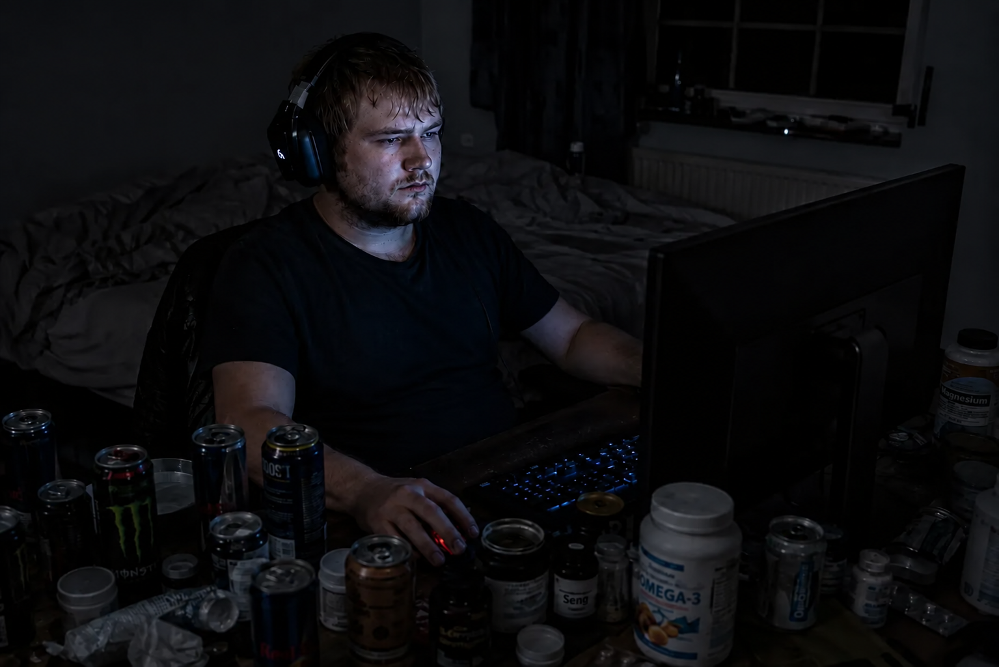

Terjemahan teks pada gambar
Label kemasan di atas meja
Magnesium
Seng
OMEGA-3
[Nama merek pada kemasan tetap dipertahankan. Sebagian tulisan lain pada kemasan tidak dapat dibaca dengan pasti.]

Siapa pun yang sudah membaca kisah saya sampai titik ini mungkin berpikir: “Oke, ia mengalahkan tinnitus pertama. Happy end.” Namun kenyataannya: Yang terburuk masih menunggu saya. Kejatuhan tubuh saya yang sesungguhnya dan mengancam nyawa belum datang.
Kamu mencari versi singkat? Bagian kedua ini masuk ke setiap detail – kejatuhan ke CFS, jalan buntu 6.800 euro, dan eksperimen kebisingan yang sengaja saya picu. Kalau kamu ingin versi yang lebih padat, kisah singkat adalah tempat yang tepat.
Satu hal dulu: Kejatuhan ini bukan harga yang harus dibayar untuk kesembuhan tinnitus. Tinnitus bukan penyebabnya. Ini reaksi berantai tersendiri dari beberapa faktor yang bertemu:
Dan tepat pada saat itu, ketika sistem kekebalan saya tidak punya cadangan sedikit pun, terjadilah: Saya tertular virus Epstein-Barr (demam kelenjar) dari sepupu saya. Karena sebelumnya saya belum pernah mengalami infeksi berat ini dan sistem saya sama sekali tidak punya cadangan lagi, itulah pukulan terakhir. Dalam beberapa minggu saya jatuh ke kondisi sindrom kelelahan kronis (CFS) yang sudah berkembang penuh.
CFS ini adalah masa terburuk dalam hidup saya. Dalam bentuk paling ekstrem, kondisi itu berlangsung tanpa henti antara 11 dan 13 bulan. Saya nyaris sepenuhnya terbaring di tempat tidur dan terkurung di rumah. Tubuh terasa seolah terbakar dari dalam, otak berada di bawah kabut tebal, dan otot kehilangan seluruh tenaganya. Mitokondria (pembangkit tenaga sel) nyaris sepenuhnya menghentikan produksi ATP (energi sel).
Dalam keputusasaan, saya mencoba segala sesuatu yang tersedia di pasar. Saya melakukan riset seperti orang gila dan membeli tanpa pilih-pilih apa saja yang menjanjikan percikan harapan paling kecil. Bukan hanya suplemen dari pemain besar Amerika yang katanya “ilmiah”, seperti Life Extension atau Thorne. Daftarnya tak berujung: Saya membeli bertumpuk-tumpuk obat bebas, tak terhitung obat homeopati, produk alami seperti garam Schüßler, prosedur detoks mahal dan zat-zat untuk mengeluarkan racun – bahkan sediaan terapi penggantian hormon untuk membangun kembali kelenjar adrenal saya yang katanya sudah benar-benar kelelahan.
Ditambah lagi beragam terapis dan perawatan. Saya menerima infus vitamin C mahal dengan harapan mengaktifkan kembali sistem kekebalan. Saya mendatangi seorang perempuan yang berpraktik sebagai terapis khusus (mendapat pelatihan berdasarkan metode Dr. Klinghardt). Di sana mereka mencoba menangani saya dengan vitamin D dosis tinggi, antijamur, dan pengobatan penyakit metabolik langka bernama KPU (kryptopyrroluria) yang katanya saya miliki. (Klarifikasi penting agar tidak menimbulkan kesan salah: Kunjungan itu murni untuk CFS saya, yaitu kelelahan ekstrem – tinnitus pada saat itu sudah sembuh sepenuhnya. Itu juga bukan detoks logam berat; fokusnya lebih pada KPU dan vitamin. Pendekatan terapis itu sama sekali tidak salah, tetapi saat itu memang bukan kunci yang tepat bagi sistem saya yang sepenuhnya terblokir.) Sampai hari ini saya tidak tahu apakah saya benar-benar pernah mengalami KPU. Bagi kondisi saya saat itu, semua itu sama sekali tidak membantu.
Saya bahkan ingin menjalani simulasi latihan di ketinggian (yang disebut terapi hipoksia/IHHT) di sebuah tempat praktik. Dalam terapi ini, seseorang bergantian menghirup udara dengan sedikit oksigen dan banyak oksigen untuk menempatkan mitokondria di bawah stres buatan dan memaksanya mulai bekerja kembali. Saya benar-benar pergi ke sana, tetapi membatalkannya langsung di tempat karena kepanikan saya terlalu besar dan sistem saya yang hancur menolaknya.
Pada akhirnya saya begitu putus asa sampai ingin masuk rawat inap di klinik khusus. Janji penerimaan sudah dibuat – pada akhirnya saya hanya membatalkannya karena tepat sebelumnya saya berhasil membebaskan diri saya sendiri dari neraka ini.
Dalam satu tahun itu, tanpa melebih-lebihkan, saya membakar sekitar 6.800 euro untuk semua kegilaan ini: sediaan, alat, dan terapi. Hasilnya? Benar-benar nol. Tidak ada yang berhasil. Tubuh saya tidak menerima satu pun. Saya merasa dikubur hidup-hidup.
Lalu ini:
Dalam malam-malam riset intensif di rawa CFS, saya benar-benar menemukan situs sebuah perusahaan Jerman bernama FitLine. Sampai sekarang saya masih bisa membayangkan dengan jelas bagaimana saya tiba di halaman itu. Saya berada di sana persis 4 atau 5 detik. Lalu membaca nama “FitLine”, melihat tampilannya, dan dengan penuh keangkuhan berpikir: “Nama konyol macam apa itu untuk minuman olahraga trendi? Saya butuh pengobatan yang serius, bukan jus warna-warni.”
Dalam pikiran, saya langsung memasukkannya ke kategori yang sama dengan Ratiopharm atau Centrum – barang produksi massal yang benar-benar berkualitas rendah di mata saya saat itu. Saya menutup tab. Saya sama sekali tidak melihat bahwa perusahaan itu menawarkan garansi uang kembali 100% mutlak tanpa syarat. Ego dan pengetahuan setengah matang saya menghalangi jalan.
Sekarang saya kesal memikirkan lima detik keangkuhan itu – kemungkinan besar gara-gara itu saya harus menghabiskan berbulan-bulan lagi di neraka CFS. Di sisi lain, saya senang saat itu tidak langsung bereksperimen secara membabi buta: Tanpa petunjuk terperinci dari praktisi pengobatan alternatif saya, kemungkinan besar saya akan menggunakan produk-produk itu dengan cara yang salah dalam kondisi saya saat itu.
Pada titik terendah mutlak saya pada 2013, ketika benar-benar tidak tahu harus berbuat apa lagi dan menghabiskan 98% waktu terbaring di tempat tidur, sesuatu yang menentukan terjadi. Saya berbaring di tempat tidur dengan laptop di depan. Karena riwayat saya membuat saya banyak mencari informasi tentang tinnitus, algoritma YouTube tiba-tiba menyodorkan sebuah video ke beranda saya. Itu adalah ceramah tentang tinnitus dari seorang praktisi pengobatan alternatif yang sudah saya kenal lewat YouTube. Sebelumnya saya sudah menonton beberapa videonya dan sangat terkesan karena ia menjelaskan segala sesuatu secara luar biasa menyeluruh, mudah diikuti, dan dengan kompetensi yang sangat tinggi.
Karena sepanjang waktu itu saya terus mencari dokter dan praktisi pengobatan alternatif baru dalam keputusasaan, tiba-tiba muncul dorongan dari dalam diri saya: “Saya dengarkan dia sekali lagi. Coba lihat, apa dia bisa meyakinkan saya, apa dia yang berikutnya.” Saya mengklik videonya, menutup mata karena begitu kelelahan, dan hanya mendengarkan.
Ada satu hal penting yang perlu diketahui: Pada saat itu ibu saya sudah menolak keras membawa saya ke dokter atau praktisi pengobatan alternatif lain. Dalam waktu singkat itu kami sudah membakar jumlah uang yang tidak masuk akal (6.800 euro tadi), dan penolakannya tentu sepenuhnya bisa dipahami.
Namun ketika mendengarkannya dan kembali begitu terpikat oleh caranya berbicara, saya memeriksa lebih teliti dan menemukan sesuatu yang benar-benar membuat saya tercengang: Orang ini hanya berjarak 30 kilometer dari saya! Sampai saat itu saya sama sekali tidak tahu. Pada detik itu saya membulatkan tekad dengan menggebu-gebu: “Saya harus mencoba berobat kepadanya. Ini percobaan terakhir saya sebelum akhirnya masuk rawat inap di klinik.” Karena untungnya begitu dekat, tak lama kemudian saya menyeret diri ke tempat praktiknya dengan sisa tenaga terakhir.
Ia mendengarkan kisah saya, berdiri, lalu mencampurkan bubuk dalam segelas air. Ia menaruh di depan saya segelas cairan oranye terang, hampir seperti wortel. Saya meminumnya.
Dan baru belakangan saya benar-benar ngeh: Yang ia berikan kepada saya adalah persis set FitLine lengkap (Basics, Restorate, Activize, omega-3 DHA/EPA dosis tinggi, dan Q10) – “jus trendi” yang beberapa waktu sebelumnya saya singkirkan dengan keangkuhan yang tidak masuk akal!
Apa yang terjadi setelah minum di tempat praktik itu benar-benar gila: Setelah 6 sampai 8 menit, mendadak seluruh tubuh menjadi sangat hangat. Aliran darah yang luar biasa deras dan terasa jelas melesat melalui pembuluh saya. Kulit memerah, seluruh tubuh kesemutan. Untuk pertama kalinya dalam lebih dari satu tahun, saya kembali merasakan energi fisik nyata di dalam sel-sel saya. Activize dalam set itu memicu flush niasin yang masif.
Untuk langsung menempatkannya dalam konteks yang benar dan tidak membuat siapa pun takut pada sensasi kesemutan ini: Flush pada diri saya hanya begitu ekstrem karena pada tingkat sel tubuh saya benar-benar sudah terkuras habis. Dan bukan karena saya tidak mengonsumsi nutrisi – sebelumnya saya sudah menelan pil Amerika senilai hampir 6.800 euro!
Masalah sebenarnya bagi saya adalah blokade tiga lapis dalam sistem: Pertama, saluran pencernaan saya benar-benar kehilangan keseimbangan akibat stres permanen, peradangan, dan antibiotik sebelumnya (yang menyebabkan disbiosis). Kedua, akibat CFS, usus saya memang tidak punya energi seluler (ATP) untuk melakukan kerja berat pencernaan dan penyerapan nutrisi. Ketiga, akibat mode pasokan energi darurat anaerob, sel-sel saya menjadi begitu asam sehingga bahkan nutrisi yang masih berhasil masuk ke darah hampir tidak diizinkan masuk ke sel target. Saya kelaparan pada tingkat sel meski piring penuh.
Justru set nutrisi cair dengan bioavailabilitas tinggi inilah yang menerobos blokade itu. Pada saat itu harapan menyala kembali. Tak lama kemudian saya akhirnya menanggalkan kesombongan saya, membeli set lengkap ini untuk di rumah, dan sejak itu mengonsumsinya dengan konsisten setiap hari. Hasilnya hampir terasa tidak nyata:
Secara fisik saya bukan hanya kembali ke 100%, tetapi secara energi bahkan lebih tangguh dan lebih bertenaga daripada kapan pun sepanjang hidup saya!
Karena tanpa CFS, bagian kedua kisah ini tidak akan pernah terjadi. Pada masa itu saya memahami apa itu energi sel dan apa arti bioavailabilitas – lewat tubuh saya sendiri, dari 98 persen waktu terbaring di tempat tidur sampai sukarela mengambil sif ganda.
Dan sekarang saya punya set nutrisi yang saya tahu kemampuannya. Dari pengetahuan itu lahirlah ide paling gila dalam hidup saya.
⚠️ Catatan penting: Sebelum saya menggambarkan eksperimen ini, saya ingin menegaskan bahwa saat itu saya juga bisa saja mengalami kerusakan permanen. Jangan pernah menirunya.
Tahun-tahun berlalu. Saya kini kembali menjalani hidup yang sepenuhnya normal, pendengaran saya sempurna, dan berkat rutinitas nutrisi harian saya merasa lebih berenergi daripada sebelumnya. Saya sering memikirkan kembali teori tinnitus saya.
Logika ini tidak mau lepas dari pikiran saya: Pada titik ini saya merasa memiliki energi tiga kali lipat dibandingkan saat tinnitus pertama. Karena itulah saat itu saya harus mengurung diri selama setengah tahun di kamar sunyi, sebab dengan energi yang begitu sedikit sel-sel telinga saya terlalu lemah. Setiap bunyi normal sehari-hari saat itu kemungkinan besar memiliki dampak negatif yang jauh lebih kuat terhadap regenerasi tinnitus daripada sekarang, seandainya saya melewatinya sekali lagi. Begitulah tepatnya jalan pikiran saya saat itu.
Jadi saya melakukan sesuatu yang bagi dokter mana pun pasti terdengar benar-benar gila: Dengan sepenuh niat saya memicu tinnitus kedua.
Beberapa tahun setelah sembuh dari CFS, dua hal bertemu: Di satu sisi, rasa lapar saya terhadap hidup masih sangat besar. Di sisi lain, teori tinnitus itu tertancap kuat di kepala dan saya benar-benar ingin tahu. Karena itu, dalam sebuah pesta yang memang sudah sangat bising, saya menanggalkan sepenuhnya kewaspadaan lama yang melindungi saya. Saya berpesta sangat lepas dan dengan sengaja membiarkan diri dihantam penuh oleh kebisingan kuat itu.
Bahkan selama pesta itu, dalam beberapa momen saya sudah merasakan akibatnya: Pada saat-saat yang sangat bising, mendadak muncul rasa tertekan yang jelas di telinga. Sama sekali tidak seberat setelah malam diskotek pertama, tetapi saya tahu persis bahwa kebisingan benar-benar menghantam telinga pada saat-saat tersebut. Begitu suasana sedikit lebih pelan, rasa tertekan itu kembali hilang dalam waktu singkat. Itu hanya sinyal peringatan sementara dan – inilah yang menentukan – belum ada tinnitus.
Rasa tertekan inilah dorongan terakhir yang membalikkan sakelar di kepala saya. Saya berpikir: “Oke, sistem ini goyah. Kalau saya ingin menuntaskan eksperimen, sekarang saya akan membawanya sampai ke batas mutlak, sampai tinnitus kembali.”
Yang menyusul adalah sesi headphone berlebihan selama berminggu-minggu dengan musik sangat keras. Dalam fase ini, persepsi pendengaran saya berubah drastis. Pada beberapa saat, musik sama sekali tidak lagi terasa menyenangkan. Mendengar berubah menjadi usaha murni dan terasa seperti beban nyeri fisik yang nyata – tekanan di telinga yang sangat tidak nyaman, menyebar, dan terasa jauh di dalam.
Seluruh diri saya menjerit: Lepas headphone itu, ini terlalu berat untuk telingamu! Saya mengabaikannya dan terus melanjutkan dengan keras kepala.
Di luar komputer pun keseharian berjalan pada volume maksimal. Saya sama sekali tidak berpikir untuk mengurung diri di kamar seperti pertama kali. Saya berkendara jarak jauh dengan musik keras, pergi ke pesta ulang tahun bersama teman, pergi berpesta, dan menelan mentah-mentah seluruh level kebisingan hidup yang tanpa ampun.
Lalu akhirnya tibalah satu malam itu. Saya kembali duduk di depan komputer, membiarkan telinga terpapar suara dari headphone – dan mendadak ada lagi sensasi bunyi tipis yang tidak mungkin keliru di telinga kiri. Bunyinya kembali. Masih sangat pelan dan mudah ditutupi oleh bunyi sekitar, tetapi ia ada.
Pada saat itu konflik ekstrem dan absurd mengamuk di dalam diri saya. Di satu sisi, kengerian murni menyambar kepala saya: “Oh sial!” Di sisi lain, ada rasa terpukau yang nyaris gila: “Oke, gila. Saya berhasil. Inilah tepatnya yang saya butuhkan untuk tes.”
Tapi bagaimana dalam kondisi seperti ini tinnitus bisa kembali naik dengan begitu ganas sampai 75% dari volume tinnitus saya yang paling pertama? Bukankah lewat rutinitas FitLine saya sudah membangun perisai pelindung yang kuat sekali? Jawabannya: Saya sengaja membongkar perisai itu.
Ketika tinnitus mula-mula hanya kembali terasa sangat tipis dan samar di telinga kiri, saya menyadari bahwa sistem yang terisi penuh langsung melawannya. Nutrisi menjaga kerusakan tetap sangat kecil. Namun justru itulah yang tidak saya inginkan untuk eksperimen pamungkas ini. Kalau ingin membuktikan bahwa rutinitas saya dapat memperbaiki tinnitus berat “sambil jalan” (di tengah keseharian), maka tinnitus terlebih dahulu harus tumbuh kembali ke level yang cukup kuat dan tidak bisa disangkal.
Jadi saya mengambil keputusan yang gila, tapi disengaja: Saya menghentikan konsumsi suplemen nutrisi sepenuhnya (abstinensi). Saya menghentikan seluruh set FitLine. Dan lesitin – yang sejak tinnitus pertama (Biografi Bagian 1) sudah saya kenal dan gunakan sebagai fondasi mutlak saya bagi lapisan mielin – juga saya tinggalkan sepenuhnya.
Di tengah eksperimen kebisingan, saya sengaja mencabut faktor-faktor sinergi dan bahan bangunan terpenting dari sel. Saya sengaja ingin membiarkan tinnitus membesar, supaya tidak lebih dulu ditekan oleh produk-produk itu sebelum mencapai tingkat yang saya inginkan untuk tes. Uji stres tanpa jaring pengaman.
Diperkirakan satu setengah bulan, paling lama dua bulan, sampai sistem saya akhirnya kolaps di bawah provokasi ekstrem yang terus-menerus ini dan ketiadaan perisai biokimia.
Suatu malam titik itu tercapai. Tinnitus tidak lagi pelan. Ia kembali dengan kekuatan brutal. Di telinga kiri, volumenya sekitar tiga perempat (75%) dari tinnitus saya yang paling pertama. Telinga kanan juga kembali bersuara, tapi tetap relatif lemah dan mudah ditutupi bunyi sekitar. Sebaliknya, telinga kiri benar-benar mengganggu tanpa henti.
Dan gambaran bunyinya sepenuhnya gila dan baru. Kepala saya menerima kekacauan mutlak dari letupan sinyal listrik yang keliru:
Sebelum akhirnya benar-benar mulai menyembuhkan diri setelah eskalasi ini, dalam fase ketika tinnitus sangat keras ini saya masih sangat ingin memeriksa beberapa hal. Sekarang saya tahu bagaimana tinnitus bekerja, dan ingin menempatkan sistem pada uji stres fisik di tubuh saya sendiri. Secara harfiah saya mengujinya pada batas ketahanannya:
1. Tes Rahang-Leher (Hubungan Silang):
Saya ingin memeriksa apakah tinnitus kembali bereaksi terhadap leher dan rahang. Jadi saya menggerakkan kepala lebar-lebar, menegangkan leher, dan memuntir rahang. Hasilnya tegas: Saya benar-benar bisa memengaruhi bunyinya, baik warna suara maupun volumenya!
2. Tes Derau (Bukti Melawan Masking):
Saya memasang headphone dan memutar derau putih yang luar biasa keras selama dua sampai tiga menit. Lalu saya menyentak lepas headphone itu. Hasilnya memukau sekaligus kejam: Selama beberapa detik tinnitus hilang sepenuhnya. Benar-benar hening, tanpa bunyi sedikit pun. Namun tepat setelah itu ia meraung lebih keras dan lebih agresif daripada yang pernah saya alami sebelumnya.
(Bagi saya, inilah bukti pada tubuh saya sendiri: Dokter merekomendasikan derau putih untuk masking. Menurut saya, apa yang sebenarnya terjadi? Derau keras memaksa sel-sel rambut saya yang sudah sakit terus-menerus memompa ion. Ketika saya melepas headphone, baterai sel sudah terkuras habis. Sel itu tidak berfungsi secara fisik dan “bisu” selama beberapa detik. Begitu terisi kembali oleh sedikit sekali energi, sinyal darurat meledak kembali dua kali lebih keras!)
3. Tes Tepuk (Guncangan Mekanis):
Mungkin terdengar bodoh, tetapi saya menepukkan kedua tangan sekali dengan keras tepat di depan telinga. Gelombang tekanan kecil tercipta. Hasilnya: Persis pada detik tepukan, tinnitus melolong marah. Namun relatif cepat kembali ke tingkat normal.
Namun ketika berbaring di tempat tidur pada malam hari, realitas menghantam saya tanpa ampun. Bunyi-bunyi di kepala begitu memekakkan dan menusuk sampai – terutama di telinga kiri – bahkan televisi tidak bisa menutupinya. Saya sangat sulit tertidur dan benar-benar teringat kuat pada fase tinnitus pertama.
Itu membuat saya benar-benar takut. Euforia dan rasa terpukau awal atas keberhasilan eksperimen lenyap total dalam satu pukulan.
Saya menatap langit-langit dan pikiran berpacu: “Ya Tuhan, semoga ini benar-benar hilang lagi. Apakah saya melakukan sesuatu yang sepenuhnya salah? Apa ini kesalahan yang sangat besar? Apakah saya akan membawanya seumur hidup hanya karena ingin membuktikan sebuah eksperimen bodoh?”
Neraka kembali.
Keesokan paginya saya bangun dan keputusan sudah bulat. Tinnitus sudah cukup keras. Saatnya melawannya dan kembali meningkatkan penggunaan produk-produk itu. Ketika paket FitLine yang baru saya pesan tiba, pada saat yang sama saya berangkat untuk membeli lagi lesitin andalan lama dari toko obat, untuk mulai kembali pulih dan sembuh.
Jadi rangkaian suplemen untuk penyembuhan saya adalah:
(Kenapa kali ini tanpa bubuk asam amino pahit seperti pertama kali? Saat itu saya punya gastritis kronis dan hampir tidak bisa memanfaatkan protein dari makanan biasa. Sekarang, setelah pemulihan usus, pencernaan saya sudah baik – tubuh saya mendapatkan asam amino dari makanan.)
Sejak saat itu saya mengonsumsi produk setiap hari, tetapi ada satu “masalah” besar: Pada masa ini saya berada dalam rasa lapar yang luar biasa terhadap hidup. Kemenangan atas CFS sudah berlalu beberapa tahun. Saya kembali bekerja, berada tepat di tengah kehidupan, dan benar-benar sedang dalam flow. Karena itu saya berpikir: “Saya konsumsi rangkaian suplemen ini dulu untuk meredam yang terburuk. Tetapi bagaimana tepatnya saya akan kembali menjalankan ‘mode biksu’ ekstrem itu… nanti saya pikirkan.” Saya sama sekali tidak berminat kembali mengisolasi diri dari teman, pekerjaan, dan kehidupan seperti pertama kali. Untuk sementara saya terus menunda keputusan berat itu.
Jadi saya memilih kompromi: Sepanjang hari saya mencoba menjaga volume serendah mungkin dan secara konsisten menghindari puncak kebisingan ekstrem. Secara konkret: Radio mobil tidak lagi diputar mentok, tidak ada lagi sesi mendengarkan musik keras lewat headphone di rumah, dan tentu saya menjauh dari diskotek.
Namun di luar itu saya tidak menarik diri sepenuhnya. Saya tetap berbelanja seperti biasa. Saya pergi ke pasar malam bersama teman dan ke bioskop bersama rekan kerja. Saya terus hidup relatif normal. Dan setiap kali muncul kesenangan spontan yang tidak ingin saya tolak hanya karena volume – misalnya pergi ke pesta biasa bersama teman (bukan diskotek yang berisik, melainkan pesta biasa) – saya berkata ya dan ikut.
Lalu terjadi sesuatu yang tidak bisa dipercaya, sesuatu yang sama sekali tidak saya duga. Bahkan dalam minggu-minggu pertama – perkiraan saya di suatu titik antara minggu ke-2 dan ke-3 – saya mendadak menyadari: Gila, bunyinya sudah bereaksi sekarang!
Terasa ada pengurangan dan penipisan bunyi, lalu frekuensi mulai berganti. Pertama, desis yang sepenuhnya baru di telinga kiri lenyap. Kemudian siulan permanen dan sisa latar bunyi juga terasa menipis. Bunyi-bunyi itu sudah jauh kurang agresif dibandingkan beberapa minggu sebelumnya. Terutama pada pagi hari saya merasakannya.
Saya duduk di sana, menatap ke depan dengan benar-benar terpana, dan berpikir: “Hah?! Oke, gila… Saya sebenarnya masih hidup sepenuhnya normal, hanya menghindari puncak kebisingan yang kuat dan berkepanjangan, dan seluruh sistem ini sudah bereaksi?!” Dalam pikiran saya memang masih ada keputusan bahwa untuk penyembuhan total dan final mungkin sebentar lagi saya harus masuk ke mode biksu keras itu – tetapi karena sistem sudah merespons nutrisi secara begitu luar biasa, untuk sementara saya terus menjalani jalan kompromi ini.
Proses penyembuhan berlangsung berangsur-angsur dan memakan waktu kira-kira tiga sampai empat bulan. Namun tinnitus tidak hilang sekaligus; ini adalah pemadaman frekuensi yang sistematis:
Seperti pada tinnitus pertama, jam-jam pagi adalah indikator penentu. Terutama pada pagi hari saya melihat efek regenerasi terkuat. Rasanya seolah sebuah kenop bergerak semakin jauh menuju garis nol – menuju “tidak ada tinnitus lagi”. Semakin banyak minggu berlalu, semakin gila hasilnya: Sampai suatu titik, pada pagi hari bunyinya bukan hanya lebih pelan, tetapi bahkan hilang sepenuhnya. Setelah itu ia benar-benar hanya bisa saya dengar dengan penyumbat telinga dalam keheningan mutlak (persis seperti pengalaman yang sudah saya ceritakan saat tinnitus pertama sembuh), sebelum siulan kembali lebih keras akibat kelelahan sepanjang hari.
Menjelang akhir bulan ketiga, pada malam hari bunyinya sudah begitu pelan sehingga hanya bisa saya dengar jika memakai penyumbat telinga di kamar yang benar-benar sunyi atau duduk di kamar mandi yang sepenuhnya hening. Pada saat itu telinga kanan sudah sepenuhnya diam. Hanya di telinga kiri ia masih sangat tipis.
Untuk benar-benar menuntaskan semuanya, saya kembali membeli tetes vitamin B12 khusus dan setiap hari meneteskan langsung di bawah lidah, agar memberi sistem dorongan paling akhir melalui mukosa mulut.
Lalu, pada suatu titik dalam minggu-minggu berikutnya, tinnitus hilang sepenuhnya. Sekarang saya bahkan tidak bisa mengatakan persis berapa minggu lagi yang dibutuhkan sejak titik itu, karena pada suatu saat saya tidak lagi memantaunya seintensif sebelumnya. Namun pada akhirnya ia memang hilang begitu saja. Ia lenyap. Tanpa sisa. 100%.
Saya berhasil melewati tes paling gila dalam hidup saya. Dan sekarang saya tahu: Pada kali pertama, banyak hal terjadi karena kebetulan dan keberuntungan. Pada kali kedua tidak. Tinnitus hilang karena saya memberikan apa yang dibutuhkan sel-sel saya – di tengah keseharian yang normal, tanpa mode biksu.
Saya tidak pernah merencanakan sebuah situs. Semua ini saya jalani untuk diri sendiri, supaya bisa hidup tenang – dan mungkin untuk suatu saat diceritakan kepada seorang teman atau praktisi pengobatan alternatif saya.
Tapi semakin banyak saya membaca tentang betapa banyak orang yang dipulangkan dokter dengan kata “tak tersembuhkan” dan malam-malam tidak tahu lagi harus berbuat apa, semakin jelas bagi saya: Ini tidak akan saya simpan sendiri.
Saya tahu persis seperti apa seluruh kisah penyakit dan penyembuhan ini pasti terbaca bagi orang luar. Seandainya saya sendiri tidak mengalami semuanya – rangkaian “kebetulan” absurd, pemberontakan awal terhadap dokter THT, jatuh jauh ke dalam CFS, terapi 6.800 euro yang gagal, dan akhirnya momen gila ketika algoritma YouTube, di saat tergelap saya, menyodorkan praktisi pengobatan alternatif penyelamat yang hanya berjarak 30 kilometer ke layar… saya mungkin juga akan menganggapnya sekadar naskah Hollywood murahan atau dongeng karangan. Kedengarannya memang terlalu gila untuk menjadi nyata.
Tapi justru karena itulah saya membuka semua kartu saya di sini. Ini bukan kisah kesembuhan karangan, bukan trik pemasaran, dan apalagi esoterisme tanpa dasar. Ini kebenaran fisik dan seluler yang dingin tanpa kompromi. Saya memiliki setiap bukti fisik dari neraka ini dan dari kesembuhan ini: Audiogram dari dokter dengan penurunan besar pada frekuensi-frekuensi pendengaran, laporan laboratorium, diagnosis, dan tagihan klinik serta terapis.
Saya menceritakan semua ini bukan untuk menghiburmu. Saya menceritakannya karena saya menemukan jalan keluar dari sistem ini bagi diri saya – dan karena saya berharap pengetahuan ini juga dapat membantumu dengan pendengaran dan malam-malammu.
Catatan penting:
Yang kamu baca di sini adalah kisah pengalaman pribadi saya. Setiap tubuh dan setiap kisah berbeda.